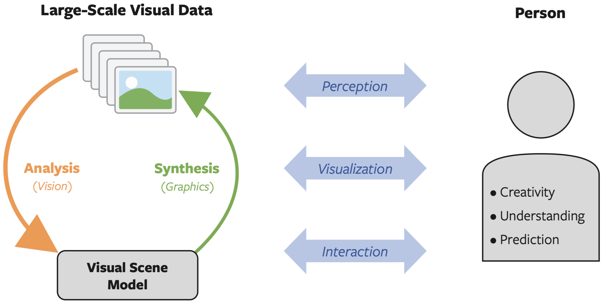

|
可视计算是一个统称，涵盖所有处理图像和三维模型的计算机科学学科，例如计算机图形学、图像处理、可视化、计算机视觉、虚拟现实、增强现实、视频处理以及计算视觉学。 可视计算还包括模式识别、人机交互、机器学习和数字图书馆等方面的内容。 其核心挑战在于视觉信息（主要是图像和视频）的获取、处理、分析和渲染。 应用领域包括工业质量控制、医学图像处理与可视化、测绘、机器人技术、多媒体系统、虚拟遗产、电影电视特效以及游戏学。 可视计算还涉及数字艺术和数字媒体研究。（来源：维基百科）
| 南京理工大学视觉计算课题组的研究领域覆盖计算机视觉、计算机图形学、图像处理、虚拟现实、增强现实；同时包含模式识别与机器学习相关研究方向。上述各分支均围绕视觉数据（主要包含三维高斯溅射模型、点云、网格模型与二维图像）开展全链路研究，涵盖数据采集、处理、表征、分析、理解、渲染与安全防护全流程。 本课题组将可视计算视作一套闭环系统：分析类方法（即计算机视觉）从图像、三维形体等视觉数据中提取完备场景模型；合成类方法（即计算机图形学）再将该类场景模型还原为可观测视觉数据。闭环两端形成互促协同关系：大规模视觉数据分析可支撑构建、训练性能更优的合成算法（如生成对抗网络）；而合成模型的输出成果又能为分析算法的迭代优化提供支撑（例如为计算机视觉系统提供合成训练数据集）。 |  |
我们目前的研究重点主要聚焦于：1）三维视觉，2）可视数据合成与生成，3）可视数据质量评价，4）虚拟现实与增强现实。 其他方面的工作还包括：1）AIGC中的安全与隐私，2）图像理解与处理。
三维视觉
三维视觉是计算机视觉的一个子领域，专注于使机器能够从视觉数据中感知、理解和重建世界的三维结构。 其核心研究涵盖了从二维输入（如单幅或多视角图像、视频或深度传感器）到三维表示（包括点云、网格、体素场以及神经辐射场等神经隐式表示）的完整流程。 该领域借助深度学习、可微渲染和基础模型来弥合二维感知与物理三维现实之间的鸿沟。 通过对几何、纹理和空间关系进行建模，三维视觉将二维视觉信号与现实世界的空间理解相连接，支持在复杂环境中实现精准的感知与交互。 三维视觉的应用领域包括自动驾驶、机器人技术、增强现实、医学影像和虚拟现实等领域。 目前我们在三维视觉方向主要聚焦于三维理解、三维重建的相关研究工作。
 点云分割 |
 点云采样 |
 点云压缩 |
 点云识别 |
 点云分类 |
 三维重建 |
 细小物体重建 |
可视数据合成与生成
可视数据合成与生成主要专注于三维建模、数据（图像、点云等）生成与合成。 三维建模的研究传统上涵盖几何处理——如点云去噪、采样和表面重建——以将原始传感器数据转换为拓扑一致的网格或体素网格。当前三维建模的重点已转向神经表示，利用神经辐射场（NeRF）和三维高斯溅射（3DGS）将复杂场景编码为连续函数，以实现照片级逼真的合成。 数据合成与生成旨在通过程序化生成、生成式模型和可微渲染来生成高质量的合成图像、纹理、材质以及完整的三维资产。 目前我们在可视数据合成与生成方向主要聚焦于三维模型处理、三维内容生成、多光谱图像合成的相关研究工作。
 点云去噪 |
 网格去噪 |
 三维高斯泼溅 |
 神经辐射场 |
 点云生成 |
 网格生成 |
 红外图像合成 |
 可见光图像合成 |
可视数据质量评价
可视数据质量评价致力于设计客观和主观的度量指标，用以量化数字内容的感知保真度、几何保真度、结构完整性以及物理真实感。 该领域架起了机器感知与人类视觉之间的桥梁，为自动驾驶、三维重建和沉浸式媒体等领域的采集、传输与重建系统优化提供了理论指导和量化工具。 目前我们在可视数据质量评估方向主要聚焦于点云质量评价、AIGC质量评价、多光谱合成图像质量评价的相关研究工作。
 点云质量评价 |
 红外图像质量评价 |
 AIGC质量评价 |
虚拟现实与增强现实
 虚拟现实 |
 虚拟现实 |
 虚拟现实 |
 增强现实 |
 增强现实 |
 增强现实 |
AIGC安全与隐私
 三维高斯泼溅 |
 神经辐射场 |
图像理解与处理
 小目标检测 |
 缺陷检测 |